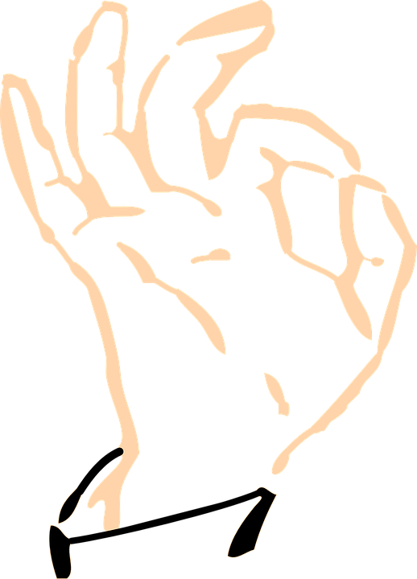
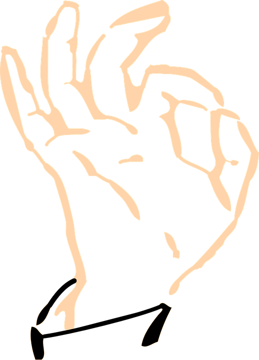

o
o
o
Más muy pronto...
A pesar de la falta completa de poderes extraordinarios, un adolescente se reinventa a sí mismo como un superhéroe y, junto con un equipo padre/hija de vigilantes, se enfrentan a un jefe criminal.
2010
Después de sobrevivir a un ataque bovino casi mortal, un chef desfigurado de cafetería (Wade Wilson) lucha por cumplir su sueño de convertirse en el barman más caliente de Mayberry mientras aprende a lidiar con su perdido sentido del gusto...
2018

Actividades extrañas se presentan luego que un marido y su esposa llevan a su bebe recién nacido a casa. Ellos descubren que un demonio nefasto acecha a su familia, consultan a expertos e instalan numerosas cámaras para deshacerse del espíritu.
2013
Cuando John Bennett (Mark Wahlberg) era un niño pequeño, pidió el deseo de que Ted (Seth MacFarlane), su querido oso de peluche, cobrara vida. Treinta años más tarde, Ted continúa siendo el compañero de John, ante el disgusto de Lori...
2012
Más muy pronto...